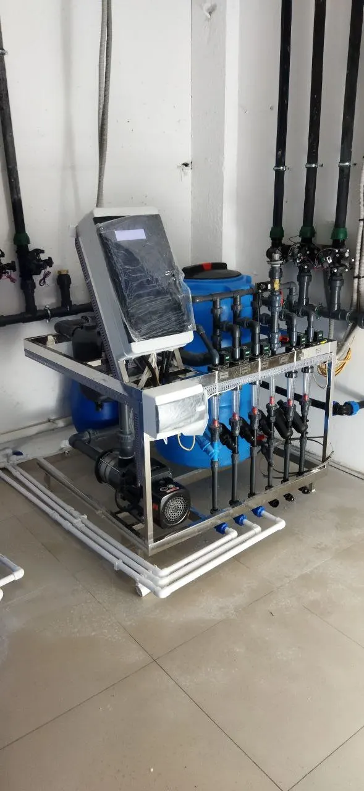

Есть помещение или вводные
Нужно сверить площадь, высоту, проходы, ресурсы и комплект оборудования до оплаты.
Оставить вводныеСверяем площадь, высоту, ресурсы, проходы и комплект оборудования до оплаты поставщикам.
Это следующий шаг после идеи или предварительного расчёта, когда уже есть помещение, планировка, выбранные позиции или желание понять первую очередь закупки.
Нужно сверить площадь, высоту, проходы, ресурсы и комплект оборудования до оплаты.
Оставить вводныеЕсли нет площади и состава фермы, начните с быстрой рамки по посадке, нагрузке и бюджету.
КалькуляторЕсли вопрос в ягоде, климате, питании или сбоях, нужен разбор действующей фермы или консультация.
СопровождениеВ клубничной ферме нельзя проверять свет, стеллажи и полив отдельно. Один слабый вводный меняет весь комплект.

Проверяем ярусность, ширину обслуживания, доступ к растениям и реальную полезную площадь.
Считаем не только лампы, но и тепло, мощность, кабельные ограничения и режим работы.
Сверяем воду, фильтрацию, ёмкости, подачу, возврат и совместимость с субстратом.
Проверяем, подходит ли выбранная схема под сорт, плотность посадки и планируемый запуск.
Без длинной анкеты на старте: вы присылаете основные вводные, мы возвращаем понятный рабочий маршрут.
Достаточно базовых данных. Если есть расчёт из калькулятора, он подставится в форму автоматически.
Площадь, высота, вода, мощность и выбранные узлы влияют на весь комплект. Передайте вводные, чтобы понять, что можно покупать, а что нужно пересчитать.